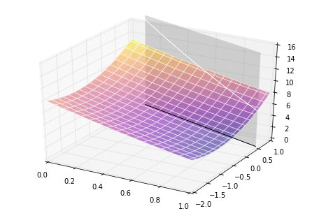

Lagrangian duality example using ob-python
Introduction
This is an example extracted from "An Introduction to Structural Optimization", I also added a few extra images to clarify some points.
-
What is Lagrangian duality?
-
Why is it called Lagrangian duality?
Problem statement
We want to optimize the following convex and separable problem,
\begin{equation} \mathbb{(P)} \; \begin{cases} \min \limits_{x_1, x_2} (x_1 -3)^2 + (x_2 + 1)^2 \\ s.t \begin{cases} x_1+x_2-1.5 \le 0 \\ \boldsymbol x \in \chi = { \boldsymbol x \; : \; 0 \le x_1 \le 1, -2 \le x_2 \le 1}. \end{cases} \end{cases} \end{equation}
Visualization of the objective function
The objective function can be visualized as the following,
%matplotlib inline
import matplotlib.pyplot as plt
from mpl_toolkits.mplot3d import Axes3D
import numpy as np
fig = plt.figure()
ax = Axes3D(fig)
ax.set_xlabel('x')
ax.set_ylabel('y')
x1 = np.linspace(0, 1)
x2 = np.linspace(-2, 1)
X1, X2 = np.meshgrid(x1, x2)
X3 = (X1 - 3)**2 + (X2 + 1)**2
ax.plot_surface(X1, X2, X3, cmap='plasma')
Visualization of the restrained domain
xr1 = np.linspace(0, 1)
xr2 = 1.5 - xr1
xr3 = (xr1 - 3)**2 + (xr2 + 1)**2
xp3 = np.linspace(0, 16)
XP1, XP3 = np.meshgrid(xr1, xp3)
XP2 = -XP1 + 1.5
fig = plt.figure()
ax = Axes3D(fig)
ax.set_ylim(-2, 1)
ax.plot_surface(XP1, XP2, XP3, cmap='gray', cstride=100, rstride=100, edgecolor='w', alpha=0.15)
ax.plot_surface(X1, X2, X3, cmap='plasma', cstride=3, rstride=3, edgecolor='w', alpha=0.5)
ax.plot(xr1, xr2, color='k')
ax.plot(xr1, xr2, xr3, color='w')
note: if anyone knows a better way to represent this domain restriction please share with me.
Visualization with contour plot
fig = plt.figure(figsize=(10,10))
ax = fig.add_subplot(1, 1, 1)
ax.set_ylabel('y')
ax.set_xlabel('x')
ax.set_aspect('equal')
ax.set_ylim(-2, 1)
CS = ax.contour(X1, X2, X3, colors='w')
ax.clabel(CS)
ax.plot(xr1, xr2, 'k')
ax.fill_between(xr1, xr2, -2, alpha=0.4)Optimize with Lagrangian duality
Form the Lagrangian function
The Lagrangian function that connects the objective function with its restrictions is
\begin{equation} \mathcal{L} = (x_1 - 3)^2 + (x_2 +1)^2 + \lambda(x_1 + x_2-1.5). \end{equation}
This function enable us to separate each variable,
\begin{equation} \mathcal{L} = \underbrace{(x_1 - 3)^2 + \lambda(x_1)}_{\mathcal{L}_1} +\underbrace{ (x_2 +1)^2 + \lambda x_2-1.5}_{\mathcal{L}_2}. \end{equation}
Compute the function derivatives
Differentiation of them results in
\begin{equation} \dfrac{\partial \mathcal{L}_1}{\partial x_1} = 2 x_1 + \lambda - 6, \qquad \dfrac{\partial \mathcal{L}_2}{\partial x_2} = 2 x_2 +\lambda +2. \end{equation}
Minimization procedure
The minimization of the Lagrangian function with each separable variable is performed as follows,
-
$\dfrac{ \partial \mathcal{L_j}(x_j^{min})}{\partial x_j} \ge 0$ then because the tendency of the function at its minimum is to increase implies that the point that minimizes the function is the minimum itself, $x^* = x^{min}$.
-
$\dfrac{ \partial \mathcal{L_j}(x_j^{max})}{\partial x_j} \le 0$ implies, with the same logic, that the point that minimizes the Lagrangian coincides with the maximum of the restriction $x^* = x^{max}$.
We can try visualize this logic with a generic quadratic function,
x = np.linspace(-5, 5)
x1 = np.linspace(2, 5)
y = x**2
y1 = x1**2
dy = 4*x - 4 # tangent line at x=2
fig = plt.figure()
ax = fig.add_subplot(1, 1, 1)
ax.set_xlabel('x')
ax.set_ylabel('y')
ax.set_xlim(-2, 5)
ax.set_ylim(0, 20)
ax.plot(x, y, '--k')
ax.plot(x1, y1, 'Tomato', lw=5)
ax.plot(x, dy, 'SteelBlue')
So, lets say we have a quadratic function limited by $x^{min}=2$ and $x^{max}=5$ (in tomato color), if the take the function derivative and evaluated it at $x^{min}=2$ we would get a positive value, since the function is increasing at this point. So, the minimum of the function happens at the interval minimum extreme.
Find the minimum for each variable
In order to perform the minimization of the Lagrangian in each variable we test the gradients at the extremes, the point where the minimum occurs is represented by $x^*$.
\begin{equation} \dfrac{\partial \mathcal{L_1(0, \lambda)}_1}{\partial x_1} = \lambda - 6 \ge 0 \qquad x_1^* = 0, \; if \; \lambda \ge 6 \end{equation}
\begin{equation} \dfrac{\partial \mathcal{L_1(1, \lambda)}_1}{\partial x_1} = \lambda - 4 \le 0 \qquad x_1^* = 1, \; if \;0 \le \lambda \ge 4 \end{equation}
\begin{equation} \dfrac{\partial \mathcal{L_1(x_1, \lambda)}_1}{\partial x_1} = 2x_1+\lambda - 6 = 0 \qquad x_1^* = 3-\dfrac{\lambda}{2}, \; if \; 4 \le \lambda \ge 6 \end{equation}
and for $\mathcal{L_2}$,
\begin{equation} \dfrac{\partial \mathcal{L_2(-2, \lambda)}_1}{\partial x_2} = \lambda - 2 \ge 0 \qquad x_1^* = -2, \; if \; \lambda \ge 2 \end{equation}
\begin{equation} \dfrac{\partial \mathcal{L_2(1, \lambda)}_1}{\partial x_2} = \lambda + 4 \le 0 \qquad \text{never satisfied because} \lambda \ge 0 \end{equation}
\begin{equation} \dfrac{\partial \mathcal{L_2(x_2, \lambda)}_1}{\partial x_2} = 2x_2+\lambda +2 = 0 \qquad x_2^* = -1-\dfrac{\lambda}{2}, \; if \; 0 \le \lambda \ge 2. \end{equation}
Form the dual objective function
The dual objective functions is the minimum of the Lagrangian function,
\begin{equation} \phi (\lambda) = \min \limits_{\boldsymbol x \in \chi} \mathcal{L} = \min \limits_{\boldsymbol x \in \chi} \sum_{j=1}^n \mathcal{L}_j, \end{equation}
or, the sum of the Lagrangian minimum on each variable, $\min \mathcal{L}_j$.
\begin{equation} \phi (\lambda) = (x_1^*-3)^2 + \lambda x_1^* + (x_2^* + 1)^2 + \lambda x_2^* - \dfrac{3}{2}\lambda \end{equation}
where $x_1^*$ and $x_2^*$ represent the points where the function is minimum.
This can be divided for each $\lambda$ interval,
\begin{equation} \begin{cases} -\dfrac{\lambda^2}{4} -\dfrac{3}{2}\lambda + 4, \qquad 0 \le \lambda \le 2\\ -\dfrac{5}{2} \lambda +5, \qquad 2 \le \lambda \le 4\\ -\dfrac{\lambda^2}{4} - \dfrac{\lambda}{2} +1, \qquad 4 \le \lambda \le 6\\ -\dfrac{7}{2} \lambda + 10, \qquad \lambda \ge 6 \end{cases} \end{equation}
Visualize the dual objective function
lambd = np.linspace(0, 10)
def phi(lambd):
return ((0 <= lambd <=2)*(-lambd**2/4 -3/2*lambd + 4) +
(2 < lambd <=4)*(-5*lambd/2 + 5) +
(4 < lambd <= 6)*(-lambd**2/4 - lambd/2 +1) +
(lambd >= 6)*(-7*lambd/2 +10))
p = []
for i in lambd:
p.append(phi(i))
fig = plt.figure()
ax = fig.add_subplot(1, 1, 1)
ax.set_xlabel(r'$\lambda$')
ax.set_ylabel(r'$\phi$')
ax.plot(lambd, p, '-k')
Maximize the dual objective function
As we can see from the plot, the dual objective function $\phi$ is maximized at $\lambda^* = 0$.
The final solution
With the maximum of the dual objective function we can go back to when we found the minimum of the lagrangian function, there we find that for $\lambda^*=0$ the values that minimize the lagrangian are
\begin{equation} x_1^* = 1 \qquad \text{and} \qquad x_2^*=-1 \end{equation}
Since we have maximized $\phi$ and minimized $\mathcal{L}$ we also obtained the solution of the original nested problem $\mathbb{P}$.
Visualize the final solution
fig = plt.figure(figsize=(10,10))
ax = fig.add_subplot(1, 1, 1)
ax.set_ylabel('y')
ax.set_xlabel('x')
ax.set_aspect('equal')
ax.set_ylim(-2, 1)
CS = ax.contour(X1, X2, X3, colors='w')
ax.clabel(CS)
ax.plot(xr1, xr2, 'k')
ax.fill_between(xr1, xr2, -2, alpha=0.4)
ax.plot(1, -1, 'or', ms=20)
Conclusion
The problem was solved.